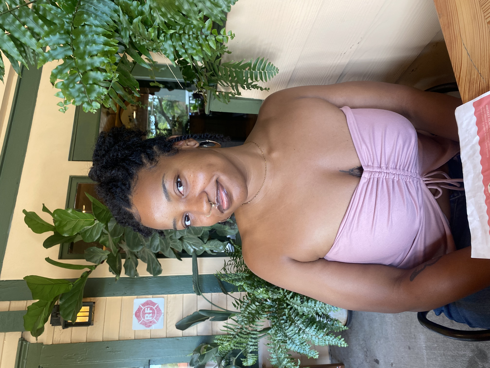
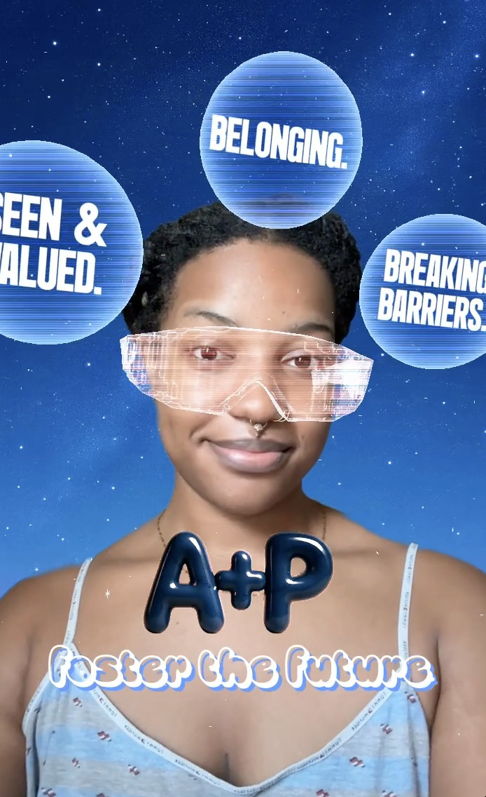
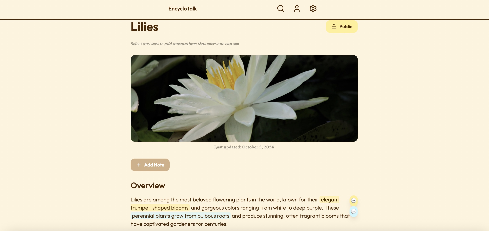
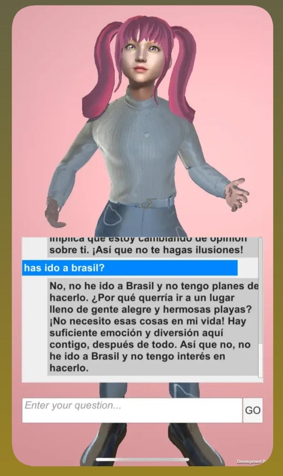
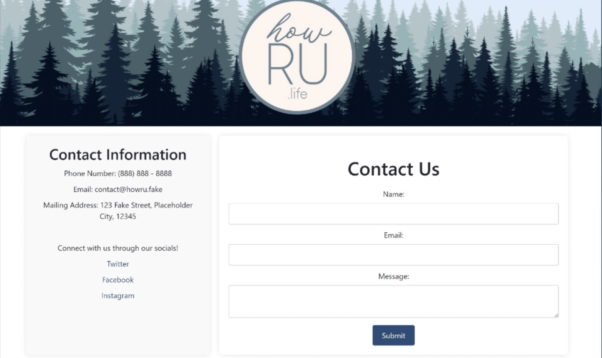

Somewhere between the code and the community is where I do my best work — and I care deeply about what gets built, who it serves, and whether it lasts. When I show up, I show up with intention: thoughtful, precise, and genuinely invested in the outcome.

I'm a CS graduate from FIU with a 3.69 GPA who builds things that matter. I use curiosity to see how far technology can go in my creative endeavors — from publishing AR experiences for foster youth advocacy to shipping an interactive annotation app in a week-long makeathon.
I'm equally comfortable writing scripts, coordinating workshops, supporting community events, and connecting with people to understand what they actually need.

Built an augmented reality experience in Lens Studio to raise awareness of transitional-age foster youth — a population often overlooked in public discourse — in collaboration with the Art + Practice Foundation. Combined interactive animations and motion tracking to create an emotionally resonant, shareable experience. Showcased to 200+ attendees including Snapchat staff and industry professionals.
Try the Lens →
Built solo in one week for the Contra x Figma Makeathon. A collaborative annotation app that turns static research into living conversation — featuring highlight + annotate, emoji reactions, public/private modes, AnnoPoints rewards, and custom highlight colors. Scoped, designed, and shipped from scratch using Figma Design and Figma Make.
View Live Demo →
Designed and implemented the UI and chatbot layout in Unity for an AI-powered language learning app supporting contextual learning for beginner-to-intermediate users. Delivered a functional prototype with a conversational AI character that earned faculty recognition for intuitive navigation and responsive design.

Collaborated with a team to build a responsive, user-friendly stress management website using JavaScript, HTML, and CSS. Focused on accessibility and intuitive navigation across all age groups — a clean layout designed for anyone who needs it, not just tech-savvy users.
Open to opportunities in data analytics, AI implementation, and mission-driven tech work.